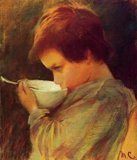

Kiddushin 78 - Parents Testify About Children
If a Kohen cohabits with his sister, he renders her a zonah (someone who engaged in illicit relationship that is forbidden to her), but he does not render her a chalalah (someone whose child looses Kohanic sanctity). However, if he cohabits with her again, he renders her a chalalah.
If one testifies that his son is a mamzer, and even if both parents say this about a fetus, they are not believed, because a man can not testify against himself. But Rabbi Yehudah says that they are believed, because a man is believed to say " this is my first-born son ," and so also about a mamzer.